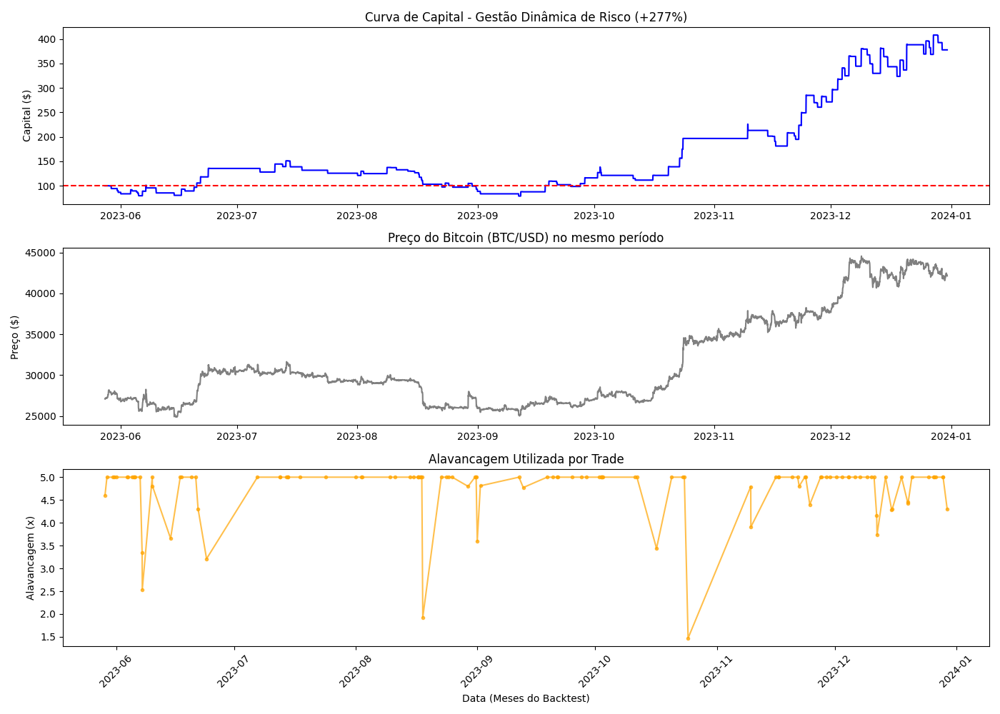

Autores: Raphael Malburg, Vasco e André Neves
Projeto Final de Engenharia de Software e IA (Março 2026)
O robô não enxerga gráficos com cores. Ele lê arquivos JSON fornecidos pela API da Alpaca contendo blocos de tempo com 5 informações cruciais:
{
"symbol": "BTC/USD",
"timestamp": "2023-05-31T14:00:00Z",
"open": 27000.50, // O: Preço de Abertura
"high": 27150.00, // H: Preço Máximo atingido
"low": 26900.00, // L: Preço Mínimo atingido
"close": 27100.25, // C: Preço de Fechamento
"volume": 1450.5 // V: Quantidade negociada
}
A partir do bloco OHLCV, calculamos os indicadores matemáticos (Features) que vão alimentar o nosso modelo de Machine Learning.
Por que 90% dos *traders* humanos falham no mercado financeiro?
O mercado de criptoativos e câmbio opera 24 horas por dia, 7 dias por semana. É humanamente impossível monitorar centenas de moedas, indicadores técnicos e manchetes de notícias simultaneamente sem perder o foco ou a janela de oportunidade.
Humanos sofrem de Loss Aversion (Aversão à perda): cortam lucros cedo demais por medo, mas seguram prejuízos por esperança. Além disso, a alavancagem é frequentemente usada como aposta, sem qualquer base matemática, levando à ruína da conta.
Remover o humano da execução e delegar o trabalho para um sistema autônomo baseado em 3 pilares:
Algoritmos de árvores de decisão (XGBoost/RF) que analisam o histórico de preços (OHLCV) e indicadores para encontrar padrões estatísticos de alta ou baixa.
Integração com LLMs (google/gemini-2.5-flash-lite) para ler e interpretar notícias macroeconômicas em tempo real, evitando "cisnes negros" que os gráficos não preveem.
Aplicação da fórmula do Critério de Kelly para calcular dinamicamente exatamente quanto capital arriscar em cada operação, baseado na volatilidade.
Transformando dados brutos de mercado em previsões probabilísticas.
O robô aprendeu com o passado para prever o futuro (Walk-Forward Validation).
Jan/2020 a Out/2022
Milhares de horas de dados históricos. Aqui o modelo analisou a relação entre os indicadores e o movimento futuro do preço para construir suas "Árvores de Decisão".
Nov/2022 a Dez/2023
A prova real. O bot operou em dados que nunca tinha visto antes. Isso garante que o lucro gerado (+277%) não é fruto de "decorar o gráfico", mas sim de aprendizado real (evitando Overfitting).
Como os dados são vistos pelo algoritmo antes da previsão?
# Amostra do DataFrame (Input do Random Forest)
| Timestamp | BTC_Close_Norm | RSI_14 | ATR_Norm | ETH_Return_Lag1 |
|---------------------|----------------|--------|----------|-----------------|
| 2023-05-31 14:00:00 | -0.015 | 38.5 | 0.021 | -0.005 |
| 2023-05-31 15:00:00 | -0.002 | 42.1 | 0.019 | +0.012 |
| 2023-05-31 16:00:00 | +0.008 | 51.0 | 0.018 | +0.008 |
Processamento Paralelo Descentralizado
Modelos matemáticos são cegos para o mundo real. O LLM atua como um "Cinto de Segurança Cognitivo".
# O que o Bot envia para o Gemini:
prompt = """
Você é um analista financeiro sênior.
Analise a seguinte manchete e determine o impacto de curto prazo no Bitcoin.
Manchete: "SEC aprova todos os ETFs de Bitcoin à vista"
Responda APENAS com um JSON contendo:
- reasoning: sua explicação lógica
- score: +1 (bullish), 0 (neutro) ou -1 (bearish)
"""
O bot faz o parse do JSON retornado e cruza com a decisão matemática do Random Forest antes de arriscar dinheiro real.
O fluxo completo de ponta a ponta rodando 24/7.
O Machine Learning não olha para o gráfico, ele processa 12 variáveis matemáticas (features) calculadas a cada hora. Elas são divididas em 4 pilares:
Das 12 features, quais o algoritmo considerou mais vitais para acertar a previsão?
O projeto não é apenas um backtest, é um software rodando em produção (Live/Paper Trading).
O Bot realmente bateu o mercado? (Período: Maio 2023 a Dezembro 2023)
Capital transformado de $100 para $377.67 operando nas ineficiências de curto prazo.
Se o usuário apenas comprasse BTC e segurasse, ganharia 55%. O Bot gerou um Alpha massivo de +222% acima do mercado.
O lucro vem da assimetria matemática (Kelly), não de tentar acertar 100% dos trades.

Clique no gráfico para ver a comparaçãoPor que a estratégia dinâmica bateu a alavancagem fixa (+198%)?
Imagine que você está jogando uma moeda onde você tem 52% de chance de ganhar (Taxa de acerto do Bot). Se você apostar todo o seu dinheiro de uma vez, uma hora você vai perder e quebrar a banca. Se apostar muito pouco, seu dinheiro nunca vai crescer.
O Critério de Kelly (criado nos laboratórios da Bell em 1956) é a fórmula matemática que calcula a aposta perfeita. Ele te diz exatamente qual porcentagem do seu capital arriscar para garantir que seu dinheiro cresça o mais rápido possível no longo prazo, sem risco matemático de falência.
O Kelly puro ainda é muito agressivo para o mercado de cripto, podendo sugerir apostas altas em cenários voláteis. O Bot aplica uma fração conservadora (ex: usar apenas 25% do que a fórmula sugere) e ajusta pelo ATR (Volatilidade atual).
Isso explica o crescimento consistente da curva de capital no gráfico anterior!
A combinação do rigor quantitativo do Random Forest com a interpretação semântica de notícias do modelo google/gemini-2.5-flash-lite supera significativamente o uso isolado da análise técnica. O LLM age como um filtro vital contra "Falsos Positivos".
A hipótese de "Eficiência Relativa" foi provada. Utilizar dados defasados do Ethereum (ETH) para prever os movimentos do Bitcoin (BTC) quase dobrou a taxa de retorno do modelo de ML puro no período de teste.
Um modelo de IA com 54% de acerto só é lucrativo se a matemática da gestão de risco (Critério de Kelly) garantir que as vitórias sejam maiores que as derrotas. O algoritmo de Position Sizing foi responsável por grande parte da performance final.
Migrar a lógica hardcoded para um framework como LangGraph, criando agentes distintos para Análise Macro, Sentimento de Rede e Risco.
Implementar pipeline de retreinamento automático mensal para evitar a "degradação do modelo" frente às mudanças de regime de mercado.
Engenharia de Sistemas de Câmbio Automatizados
Pressione ESC para ver a visão geral dos diagramas.